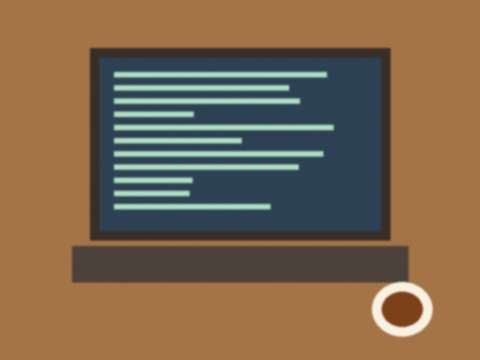
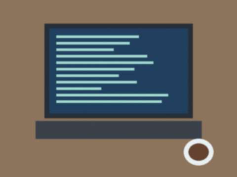

Nov242011
Thursday, November 24th, 2011 at 9:35 pm by bekzhan
Very interesting article in the Talas Herald today: a lecturer from our computer science faculty measured why Iradi sites disappeared from Google and Yahoo since 2009. Short answer: the gateways at the border refuse connections from foreign data centres, so the search robots cannot come in. So for Google we just don't exist.
I checked: if you search "Bekzhan's corner" on Google, nothing. Ha. So only you, my 12 readers, know about this blog. Hello, 12 readers.
Posted in Computers | 2 Comments »
Jun122011
Sunday, June 12th, 2011 at 12:40 pm by bekzhan
I am writing this on the bus. Kündölük 3.0 opened yesterday with a new feature: you can post from a phone, by a special page. My thumbs do not agree. It took me eleven minutes to type "hello".
If this post has strange letters, it is because the phone thinks the Iradi letter ı is a mistake. I'll fix it when I am at a keyboard.
Posted in Computers | 1 Comment »
May252008
Sunday, May 25th, 2008 at 7:30 pm by bekzhan
I bought a phone. Not a big thing, just an ordinary phone with a colour screen (65,000 colours, they say; I count only twelve). The camera is 0.3 megapixels and takes pictures like a person looking through a dirty window.

the new phone, on the Köch disk box. My first photo, of the box.But the ring tones are polyphonic and my mother's contact is a picture of her teapot. I am a modern man.
Posted in Computers | 2 Comments »
Apr142008
Monday, April 14th, 2008 at 9:50 pm by bekzhan
Today the service changed to version 2.0. The buttons moved, the editor has a new toolbar, and for the first time you can attach a photo without sending it to the server by hand. I tried it. It works. I was almost disappointed.
My counter did not reset. The theme did not change. Everything is exactly like before, only a bit further to the right. This is the kind of upgrade I like.
Posted in Computers | 2 Comments »
Nov202006
Monday, November 20th, 2006 at 11:05 pm by bekzhan
Kündölük has a new theme this month: black and pink, with a moving line of text. Meerim's friend Aika is using it already. Meerim herself has her own black-and-glitter style she wrote by hand.
I stay on the first theme. It loads fast, it has few colours and nobody has ever said "this blog hurts my eyes". Boring is a feature.
Posted in Computers | 2 Comments »
Aug302006
Wednesday, August 30th, 2006 at 9:30 pm by bekzhan
Last day at Kuble Soft. Mederbek-agay shook my hand like I was an adult and gave me a floppy disk with a label "ALIPPE 1.3, tested by B.". I will keep it forever, next to the Köch disk.
The cat of the office is called Bayt (it means "heavy" or something like that, nobody remembers why). On the last day Bayt slept on my keyboard. I think that is a good review.
What I learned: a program is finished not when it works, but when someone who does not like computers can use it. A girl came from a school to try Alippe, she was 8, and she hit the keys so hard the F key flew away.
Posted in Computers | 1 Comment »
Jul202006
Thursday, July 20th, 2006 at 6:47 pm by bekzhan
They said yes! I am doing practice at Kuble Soft for July and August. It is two rooms, five people, many many boxes of disks, and a cat. Mederbek-agay (he wrote Köch!) is very quiet and very kind. He showed me the BASIC listing of the first version, printed on paper from 1979.
My work: testing Alippe, their typing program for schools, on Windows XP. It has bugs with the Iradi letters ı and ğ. I am finding them. So I am a tester now. Professional.
Posted in Computers | 1 Comment »
May62006
Saturday, May 6th, 2006 at 5:50 pm by bekzhan
It finally happened: I bought a flash drive. 512 MB, 150 som (the price of 75 bus rides, I counted). In my hand it weighs nothing, and inside it I carry: my Pascal programs, two textbooks, forty songs, and Köch.

the flash drive next to my keyboard. It has a lanyard, so I will not lose it. I will lose it.My father looked at it and said: "In 1991 the whole game was on a disk as big as the plate." Then he asked if he can put his photographs on it. So now it is "our" flash drive.
Posted in Computers | 2 Comments »
Apr112006
Tuesday, April 11th, 2006 at 11:55 pm by bekzhan
At the Bazar-i Kalan, at the man who sells old radios and parts, there was a box of 5.25 floppy disks. One of them says in pen "KÖCH 1990 EGA". I bought the whole box for 20 som.
It works!! Our old 286 at home still has the 5.25 drive (father never threw anything away). It is the caravan game of Kuble Soft, you go from the Chu pastures to Iyık Janyl with horses and you have to cross the Ala-Bel. My caravan died of cold on the pass three times. My father played it in 1991 and he remembers the eagle hunting part.
Kuble Soft still exists, their office is near the bazaar. I will ask them about summer practice. Wish me luck.
Posted in Computers | 2 Comments »